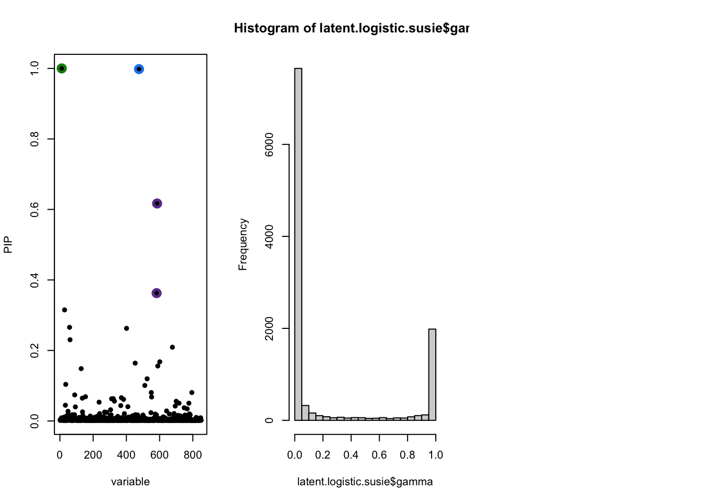
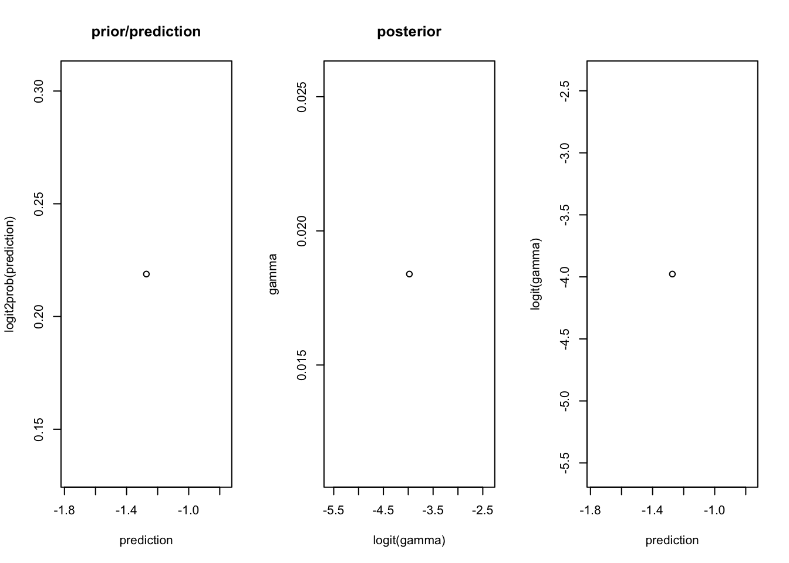
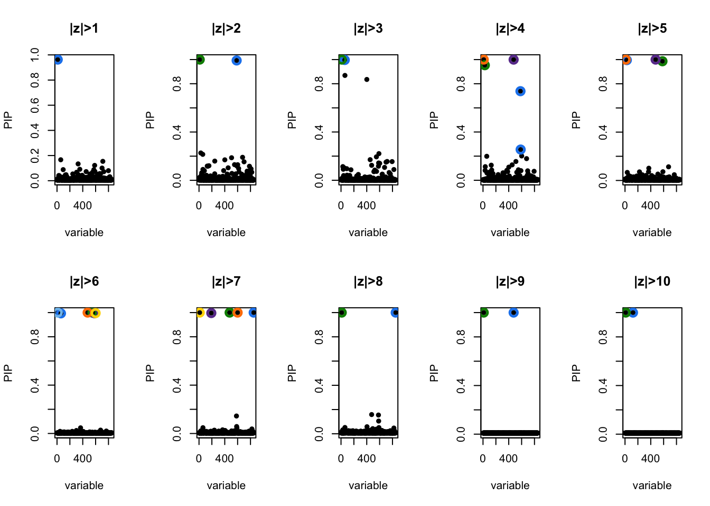

Last updated: 2022-04-07
Checks: 7 0
Knit directory: logistic-susie-gsea/
This reproducible R Markdown analysis was created with workflowr (version 1.7.0). The Checks tab describes the reproducibility checks that were applied when the results were created. The Past versions tab lists the development history.
Great! Since the R Markdown file has been committed to the Git repository, you know the exact version of the code that produced these results.
Great job! The global environment was empty. Objects defined in the global environment can affect the analysis in your R Markdown file in unknown ways. For reproduciblity it’s best to always run the code in an empty environment.
The command set.seed(20220105) was run prior to running the code in the R Markdown file. Setting a seed ensures that any results that rely on randomness, e.g. subsampling or permutations, are reproducible.
Great job! Recording the operating system, R version, and package versions is critical for reproducibility.
Nice! There were no cached chunks for this analysis, so you can be confident that you successfully produced the results during this run.
Great job! Using relative paths to the files within your workflowr project makes it easier to run your code on other machines.
Great! You are using Git for version control. Tracking code development and connecting the code version to the results is critical for reproducibility.
The results in this page were generated with repository version dc085e4. See the Past versions tab to see a history of the changes made to the R Markdown and HTML files.
Note that you need to be careful to ensure that all relevant files for the analysis have been committed to Git prior to generating the results (you can use wflow_publish or wflow_git_commit). workflowr only checks the R Markdown file, but you know if there are other scripts or data files that it depends on. Below is the status of the Git repository when the results were generated:
Ignored files:
Ignored: .DS_Store
Ignored: .RData
Ignored: .Rhistory
Ignored: .Rproj.user/
Ignored: library/
Ignored: renv/library/
Ignored: renv/staging/
Ignored: staging/
Untracked files:
Untracked: .ipynb_checkpoints/
Untracked: Untitled.ipynb
Untracked: _targets.R
Untracked: _targets.html
Untracked: _targets.md
Untracked: _targets/
Untracked: _targets_r/
Untracked: analysis/deng_example.Rmd
Untracked: analysis/fetal_reference_cellid_gsea.Rmd
Untracked: analysis/fixed_intercept.Rmd
Untracked: analysis/iDEA_examples.Rmd
Untracked: analysis/latent_gene_list.Rmd
Untracked: analysis/libra_setup.Rmd
Untracked: analysis/linear_method_failure_modes.Rmd
Untracked: analysis/linear_regression_failure_regime.Rmd
Untracked: analysis/logistic_susie_veb_boost_vs_vb.Rmd
Untracked: analysis/logistic_susie_vis.Rmd
Untracked: analysis/references.bib
Untracked: analysis/simulations.Rmd
Untracked: analysis/test.Rmd
Untracked: analysis/wenhe_baboon_example.Rmd
Untracked: baboon_diet_cache/
Untracked: build_site.R
Untracked: cache/
Untracked: code/latent_logistic_susie.R
Untracked: code/logistic_susie_data_driver.R
Untracked: code/marginal_sumstat_gsea_collapsed.R
Untracked: code/sumstat_gsea.py
Untracked: data/adipose_2yr_topsnp.txt
Untracked: data/deng/
Untracked: data/fetal_reference_cellid_gene_sets.RData
Untracked: data/pbmc-purified/
Untracked: data/wenhe_baboon_diet/
Untracked: docs.zip
Untracked: index.md
Untracked: latent_logistic_susie_cache/
Untracked: simulation_targets/
Untracked: single_cell_pbmc_cache/
Untracked: single_cell_pbmc_l1_cache/
Untracked: summary_stat_gsea_exploration_cache/
Untracked: summary_stat_gsea_sim_cache/
Unstaged changes:
Modified: _simulation_targets.R
Modified: _targets.Rmd
Modified: analysis/baboon_diet.Rmd
Modified: analysis/gseabenchmark_tcga.Rmd
Modified: analysis/single_cell_pbmc.Rmd
Deleted: analysis/summary_stat_gsea_univariate_simulations.Rmd
Modified: code/fit_baselines.R
Modified: code/fit_logistic_susie.R
Modified: code/fit_mr_ash.R
Modified: code/fit_susie.R
Modified: code/load_gene_sets.R
Modified: code/logistic_susie_vb.R
Modified: code/simulate_gene_lists.R
Modified: code/utils.R
Modified: target_components/factories.R
Modified: target_components/methods.R
Note that any generated files, e.g. HTML, png, CSS, etc., are not included in this status report because it is ok for generated content to have uncommitted changes.
These are the previous versions of the repository in which changes were made to the R Markdown (analysis/latent_logistic_susie.Rmd) and HTML (docs/latent_logistic_susie.html) files. If you’ve configured a remote Git repository (see ?wflow_git_remote), click on the hyperlinks in the table below to view the files as they were in that past version.
| File | Version | Author | Date | Message |
|---|---|---|---|---|
| Rmd | dc085e4 | karltayeb | 2022-04-07 | wflow_publish(“analysis/latent_logistic_susie.Rmd”) |
We’ve been thinking about the question “how much information is lost when you discritize?”
Running linear SuSiE on zscores/summary stats isn’t appropriate because you may have genes within an enriched gene set with differing effect sign and magnitude. Additionally, when I raised this at Gilad lab meeting Yoav was very vocal that the threshold free aspect of GSEA was a desirable property.
Borrowing from the work in iDEA, we’re going to treat the interesting/differential expression status of a gene as latent. So z-scores/summary stats are either drawn from a null-component or a non-null/interesting component. Our job is to estimate the probability that each gene is interesting. The prior probability of a gene being interesting will be modeled as a function of genesets/enrichment parameters with a SuSiE prior.
$$ \[\begin{align} \hat z_i \sim \mathcal{N}(z_i, 1) \\ z_i \sim \pi_{0i} f_0 + \pi_{1i} f_1 \end{align}\] $$
\[ \begin{align} \ln \frac{\pi_{1i}}{1 - \pi_{1i}} = \beta^Tx_i \\ \end{align} \]
Where \(x_i\) is a binary vector indicating gene set membership of gene \(i\).
Fortunately, if we look at the ELBO for logistic SuSiE the realized binary indicators \(y_i\) only appear linearly, so we can just pass in \(\mathbb E \gamma_i\) to logistic SuSiE.
All we need to do then is introduce variational approximations for (1) the latent indicators \(\gamma_i\) and (2) the paramters of \(f_0\) and \(f_1\), which for now we’ll leave fixed. We choose \(q(\gamma) = \prod_i q(\gamma_i)\) since we need \(\gamma_i\) to be (conditionally) independent to just pass them to SuSiE.
\[ \begin{align} \ln p(z | X) &= \ln \int p(z |\theta, \gamma) p(\gamma, \beta | X,\beta)p(\theta | X) d\{\beta, \gamma, \theta\} \\ &\geq \mathbb E\left[\ln p(z | \theta, \gamma) + \ln p(\theta | X) +\ln p(\gamma, \beta | X) \right] - \mathbb E_q\left[\ln q\right] \end{align} \\ = \mathbb E_q\left[\ln p(z | \theta, \gamma) + \ln p(\theta | X) \right] - \mathbb E_q\left[\ln q(\gamma, \theta)\right] + \mathbb E_{q(\gamma)} \left[ELBO_{\text{logistic SuSiE}} \right] \]
f <- system.file('data', 'summary_data.RData', package='iDEA'); load(f)
f <- system.file('data', 'annotation_data.RData', package='iDEA'); load(f)
f <- system.file('data', 'humanGeneSets.RData', package='iDEA'); load(f)
f <- system.file('data', 'humanGeneSetsInfo.RData', package='iDEA'); load(f)library(iDEA)
library(tictoc)
data(summary_data)
head(summary_data)
tic('fitting iDEA to example data')
idea <- xfun::cache_rds({
idea <- CreateiDEAObject(summary_data, annotation_data, max_var_beta = 100, min_precent_annot = 0.0025, num_core=8)
idea <- iDEA.fit(
idea, fit_noGS=FALSE, init_beta=NULL, init_tau=c(-2,0.5), min_degene=5,
em_iter=15, mcmc_iter=1000, fit.tol=1e-5, modelVariant = F, verbose=TRUE)
idea <- iDEA.louis(idea)
})
toc()
idea <- iDEA.louis(idea) ##
head(idea@de[["GO_REGULATION_OF_CANONICAL_WNT_SIGNALING_PATHWAY"]]$pip)source('code/logistic_susie_vb.R')
source('code/fit_susie.R')
source('code/fit_baselines.R')Loading required package: MatrixLoaded glmnet 4.1-3source('code/load_gene_sets.R')
library(org.Hs.eg.db)Loading required package: AnnotationDbiLoading required package: stats4Loading required package: BiocGenerics
Attaching package: 'BiocGenerics'The following objects are masked from 'package:stats':
IQR, mad, sd, var, xtabsThe following objects are masked from 'package:base':
anyDuplicated, append, as.data.frame, basename, cbind, colnames,
dirname, do.call, duplicated, eval, evalq, Filter, Find, get, grep,
grepl, intersect, is.unsorted, lapply, Map, mapply, match, mget,
order, paste, pmax, pmax.int, pmin, pmin.int, Position, rank,
rbind, Reduce, rownames, sapply, setdiff, sort, table, tapply,
union, unique, unsplit, which.max, which.minLoading required package: BiobaseWelcome to Bioconductor
Vignettes contain introductory material; view with
'browseVignettes()'. To cite Bioconductor, see
'citation("Biobase")', and for packages 'citation("pkgname")'.Loading required package: IRangesLoading required package: S4Vectors
Attaching package: 'S4Vectors'The following objects are masked from 'package:Matrix':
expand, unnameThe following objects are masked from 'package:base':
expand.grid, I, unnamelibrary(susieR)
library(progress)
library(RColorBrewer)
library(tidyverse)── Attaching packages ─────────────────────────────────────── tidyverse 1.3.1 ──✓ ggplot2 3.3.5 ✓ purrr 0.3.4
✓ tibble 3.1.6 ✓ dplyr 1.0.8
✓ tidyr 1.2.0 ✓ stringr 1.4.0
✓ readr 2.1.2 ✓ forcats 0.5.1── Conflicts ────────────────────────────────────────── tidyverse_conflicts() ──
x dplyr::collapse() masks IRanges::collapse()
x dplyr::combine() masks Biobase::combine(), BiocGenerics::combine()
x dplyr::desc() masks IRanges::desc()
x tidyr::expand() masks S4Vectors::expand(), Matrix::expand()
x dplyr::filter() masks stats::filter()
x dplyr::first() masks S4Vectors::first()
x dplyr::lag() masks stats::lag()
x tidyr::pack() masks Matrix::pack()
x ggplot2::Position() masks BiocGenerics::Position(), base::Position()
x purrr::reduce() masks IRanges::reduce()
x dplyr::rename() masks S4Vectors::rename()
x dplyr::select() masks AnnotationDbi::select()
x dplyr::slice() masks IRanges::slice()
x tidyr::unpack() masks Matrix::unpack()library(targets)
convert_labels <- function(y){
hs <- org.Hs.eg.db
gene_symbols <- names(y)
symbol2entrez <- AnnotationDbi::select(hs, keys=gene_symbols, columns=c('ENTREZID', 'SYMBOL'), keytype = 'SYMBOL')
symbol2entrez <- symbol2entrez[!duplicated(symbol2entrez$SYMBOL),]
rownames(symbol2entrez) <- symbol2entrez$SYMBOL
ysub <- y[names(y) %in% symbol2entrez$SYMBOL]
names(ysub) <- symbol2entrez[names(ysub),]$ENTREZID
return(ysub)
}
procrustes <- function(X, y){
idx <- intersect(rownames(X), names(y))
return(list(X=X[idx,], y=y[idx]))
}
make_gene_list <- function(z, z_threshold=2){
y <- as.integer(abs(z) > z_threshold)
names(y) <- names(z)
return(y)
}
# emualate susie_plot for wrapped fit functions
susie_plot2 <- function(fit, max_set_size=200, ...){
gs <- colnames(fit$alpha[[1]])
plot(fit$pip[[1]], cex=0.001, ylab='PIP', xlab='Gene Set', ...)
to_plot <- fit$cs[[1]] %>%
mutate(plot = cs_size < 20) %>%
dplyr::select(plot) %>% pluck(1)
n_cs <- sum(to_plot)
cols <- brewer.pal(n_cs,'Set1')
print(n_cs)
color <- 1
for (i in which(to_plot)){
idx = (gs %in% fit$cs[[1]]$cs[[i]])
print(which(idx))
points(x=which(idx), y=fit$pip[[1]][which(idx)], col=cols[color], cex=2, pch=16)
color <- color+1
}
points(fit$pip[[1]], col='black', pch=16, cex=0.5)
}normalize <- function(x){
m <- max(x)
norm <- log(sum(exp(x - m)) +1e-10) + m
return(x - norm)
}
logit <- function(p){
return(log(p) - log(1-p))
}
sigmoid <- function(logit){
1 / (1 + exp(-logit))
}
update_gamma <- function(y, prediction, f0, f1){
u <- bind_cols(f0(y) - prediction, f1(y) + prediction)
u <- cbind(apply(u, 1, normalize))[2,]
names(u) <- names(y)
return(u)
}
compute_ELBO <- function(gamma, y, f0, f1, logistic.susie.fit){
likf0 <-f0(y)
likf1 <- f1(y)
ELBO <- sum(gamma * likf1 + (1-gamma) * likf0)
ELBO <- ELBO - sum((gamma * logit(gamma) + log(1 - gamma + 1e-10)))
ELBO <- ELBO + tail(logistic.susie.fit$elbo, 1)
return(ELBO)
}
predict.logistic.susie <- function(fit, X){
(fit$intercept + X %*% colSums(fit$mu * fit$alpha))[,1]
}
fit.latent.logistic.susie <- function(X, z, f0, f1, outer_maxit=20, ...){
# TODO: check inputs
# Initialization
prediction <- rep(-3, length(z)) # initial prediction, prior log odds DE
gamma <- exp(update_gamma(z, prediction, f0, f1))
res <- logistic.susie(X, gamma)
ELBO <- compute_ELBO(gamma, z, f0, f1, res)
res <- c(res, list(gamma=gamma, prediction=prediction))
# Main loop
for (i in 1:outer_maxit){
prediction <- predict.logistic.susie(res, X)
gamma <- exp(update_gamma(z, prediction, f0, f1))
res$dat$y <- gamma
for (i in 1:10){
res <- logistic.susie.iteration(res)
}
res <- logistic.susie.wrapup(res)
ELBO <- compute_ELBO(gamma, z, f0, f1, res)
res$gamma <- gamma
res$prediction <- prediction
}
return(res)
}# set up
library(targets)
tar_load(X.gonr)
z <- summary_data[,1] / sqrt(summary_data[,2])
names(z) <- rownames(summary_data)
z.entrez <- convert_labels(z)'select()' returned 1:many mapping between keys and columnstmp <- procrustes(X.gonr, z.entrez)
z <- tmp$y
X <- tmp$X# density function
f0 <- function(x){dnorm(x, mean=0, sd=1, log=T)}
f1 <- function(x){dnorm(x, mean=0, sd=100, log=T)}
latent.logistic.susie <- fit.latent.logistic.susie(X, z, f0, f1)New names:
* `` -> ...1
* `` -> ...2Warning in eval(family$initialize): non-integer #successes in a binomial glm!New names:
* `` -> ...1
* `` -> ...2
New names:
* `` -> ...1
* `` -> ...2
New names:
* `` -> ...1
* `` -> ...2
New names:
* `` -> ...1
* `` -> ...2
New names:
* `` -> ...1
* `` -> ...2
New names:
* `` -> ...1
* `` -> ...2
New names:
* `` -> ...1
* `` -> ...2
New names:
* `` -> ...1
* `` -> ...2
New names:
* `` -> ...1
* `` -> ...2
New names:
* `` -> ...1
* `` -> ...2
New names:
* `` -> ...1
* `` -> ...2
New names:
* `` -> ...1
* `` -> ...2
New names:
* `` -> ...1
* `` -> ...2
New names:
* `` -> ...1
* `` -> ...2
New names:
* `` -> ...1
* `` -> ...2
New names:
* `` -> ...1
* `` -> ...2
New names:
* `` -> ...1
* `` -> ...2
New names:
* `` -> ...1
* `` -> ...2
New names:
* `` -> ...1
* `` -> ...2
New names:
* `` -> ...1
* `` -> ...2par(mfrow=c(1, 3))
susie_plot(latent.logistic.susie, 'PIP')
hist(latent.logistic.susie$gamma)
par(mfrow=c(1, 3))
prediction <- latent.logistic.susie$prediction[[10]]
gamma <- latent.logistic.susie$gamma[[10]]
plot(prediction, logit2prob(prediction), main='prior/prediction')
plot(logit(gamma), gamma, main='posterior')
plot(prediction, logit(gamma))
logistic.susie.threshold.stability <- purrr::map(
1:10,
~list(fit = logistic.susie(X, (abs(z) > .x), L=10, verbose=T), thresh = .x))
converged
converged
converged
converged
converged
converged
converged
converged
converged
convergedpar(mfrow=c(2, 5))
for (i in 1:10){
susie_plot(logistic.susie.threshold.stability[[i]]$fit, 'PIP', main=paste0('|z|>', i))
}
latent.logistic.susie$sets$cs$L2
[1] 11
$L3
[1] 476
$L1
[1] 582 585logistic.susie.threshold.stability[[2]]$fit$sets$cs$L1
[1] 11
$L2
[1] 585logistic.susie.threshold.stability[[4]]$fit$sets$cs$L1
[1] 11
$L3
[1] 476
$L4
[1] 28
$L5
[1] 582 585logistic.susie.threshold.stability[[6]]$fit$sets$cs$L1
[1] 11
$L3
[1] 600
$L4
[1] 476
$L5
[1] 582
$L6
[1] 552
$L7
[1] 61logistic.susie.threshold.stability[[8]]$fit$sets$cs$L1
[1] 11
$L3
[1] 850The latent model is recovering similar gene set enrichment as the threshold model. They agree most around \(|z| > 4\). What threshold the models tend to agree on should depend a lot on \(f_0\) and \(f_1\) so it would be good to think a bit more closesly what these should look like. Maybe there is an easy way to make this work with ranked lists too.
knitr::knit_exit()